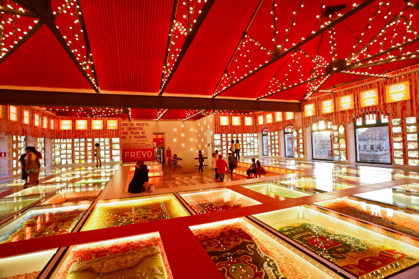

Demais pontos turísticos
Além do Marco Zero é possível conhecer também vários outros pontos turísticos no Recife antigo. A seguir vamos destacar dois grandes e importantes que diariamente recebem diversos turistas.
1. Museu do Frevo
Descubra o vibrante mundo do frevo, um estilo de dança e música animado único em Pernambuco. O museu exibe trajes, instrumentos e o ritmo contagiante do frevo.
2. Instituto Ricardo Brennand
Este museu possui uma fascinante coleção de artefatos históricos, jardins exuberantes e arquitetura cativante. Não perca a oportunidade de explorar o seu rico património.